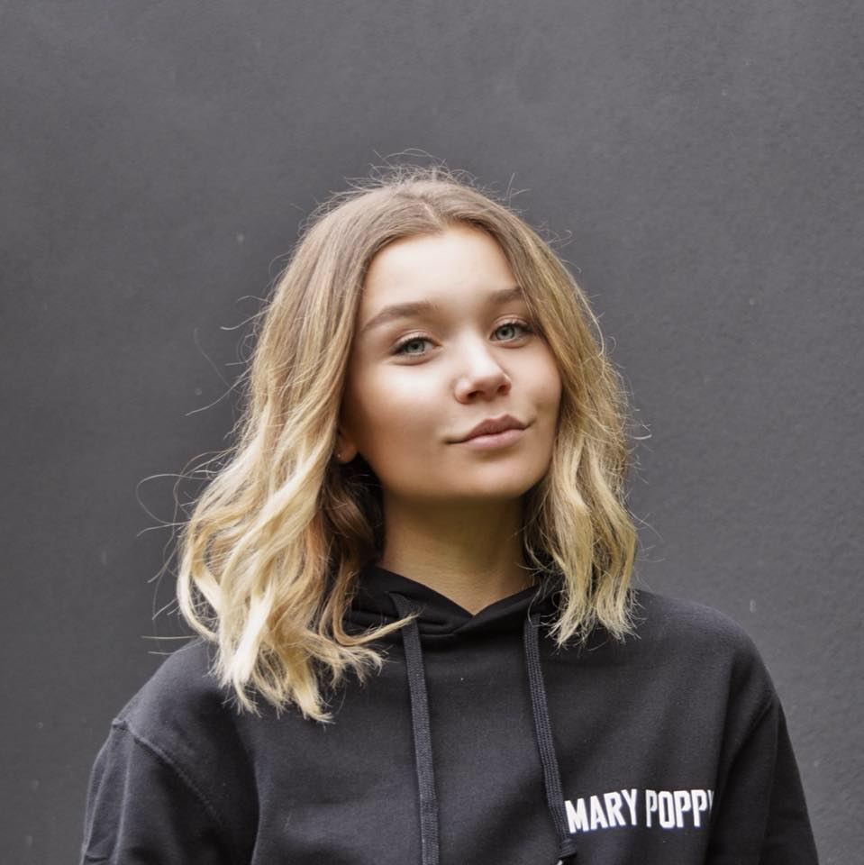

Bonjour, je m'appelle Alix 😎
Étudiante en 3ᵉ année de formation Bachelor en Management spécialisation Entreupreunariat, à Audencia Bachelor and Management, je suis à la recherche d'un stage de fin d'études dans le domaine du marketing. Ce stage d'une durée de 6 mois sera réalisé sur la période de janvier à juin 2021.
LinkedInMes expériences professionnelles
Job étudiant et CDD saisonnier à la Ferme de Belle Île à La Chapelle sur Erdre

La Ferme de Belle Île est producteur et distributeur de fruits et légumes biologiques.
En tant que vendeuse, je dois assurer l'oganisation du point de vente et des stocks. Aussi, je fidélise la clientèle à l'aide d'offre promotionnelle et de rabais sur les produits.
Stage de 3 mois chez Pots Maison à Montréal

Pots Maison est un service de prêt à manger zéro déchet et vegan.
Au cours de ce stage en tant que chef de projet marketing, j'ai créé une étude de marché pour la marque. Aussi, nous avons lancé une campagne de socio-financement pour laquelle j'ai réalisé toute sa promotion.
Stage de 2 mois à The Address Downtown à Dubaï

Address Downtown est un hôtel 5 étoiles appartenant au groupe immobilier Emaar Properties.
Lors de mon expérience à The Address Downtown, j'étais responsable de l'accueil et la prise en charge des clients. En tant que receptionniste, j'ai découvert le management d'une équipe d'un hôtel de luxe et je me suis adaptée à un environnement multiculturel.
Intérêts professionnels 💻
Marketing
Communication
RSE
Intérêts personnels
Cause animale
Consommation et nutrition responsable